vignettes/V02-BFF-example.Rmd
V02-BFF-example.RmdThis vignette demonstrates how to use cellhashR’s Bimodal Flexible Fitting (BFF) Demultiplexing Algorithm to produce the kinds of analyses reported in the BFF paper. cellhashR produces many plots and outputs that provide useful information about cell hashing data. For purposes of brevity and clarity, only output related to figures in the BFF paper is shown in this report. The data analyzed in this vignette is the same data analyzed in the BFF paper.
The plots appearing in the following figure from the BFF paper are generated using the cellhashR command PlotNormalizationQC.
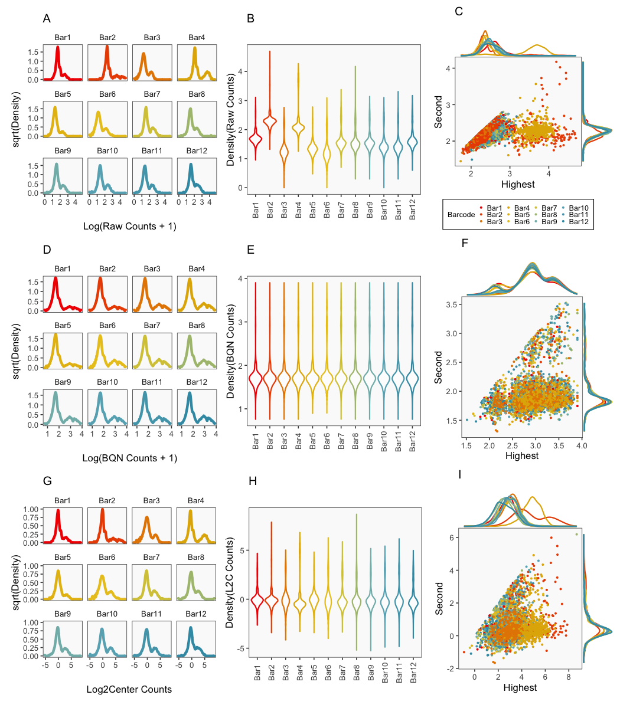
The following code produces QC plots helpful in visualizing the effects of various normalization procedures on cell hashing data, including the novel normalization Bimodal Quantile Normalization (BQN).
PlotNormalizationQC(barcodeData, methods = c('Raw', 'bimodalQuantile', 'log2Center'))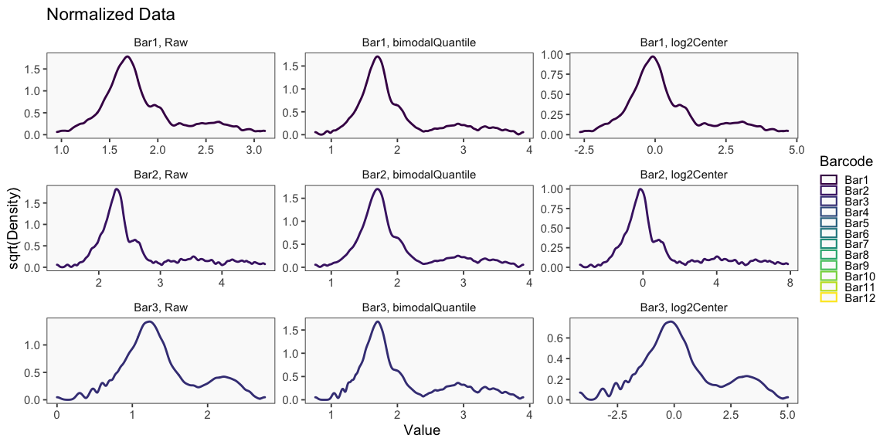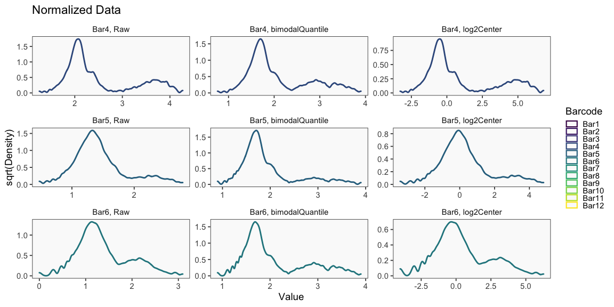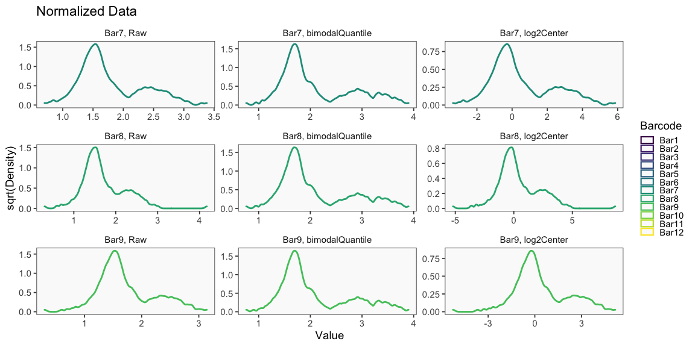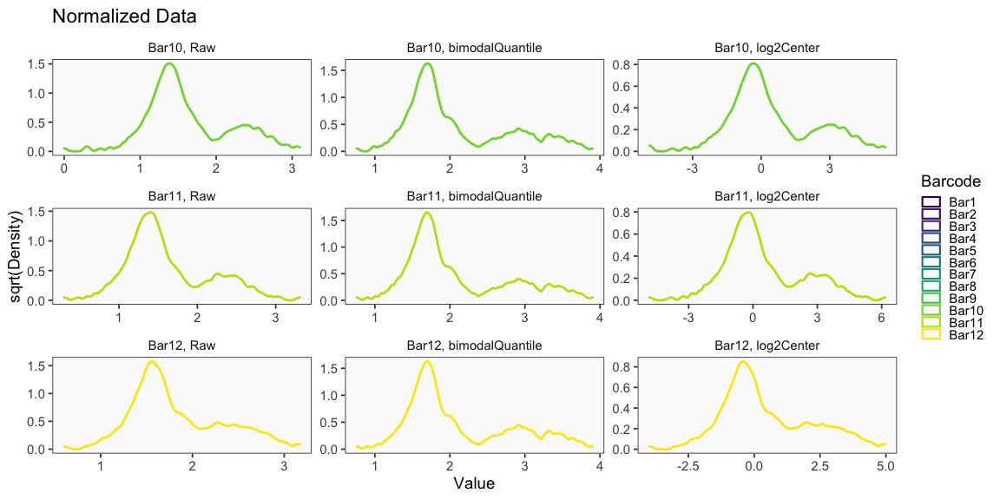
## [1] "Printing Raw Count QC Plots"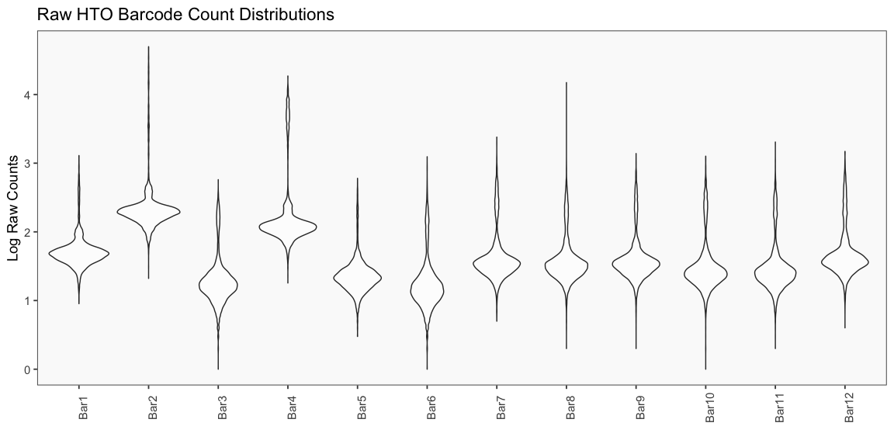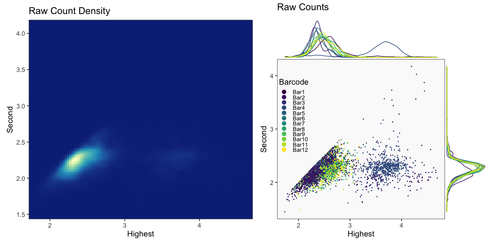
## [1] "Printing bimodalQuantile Normalization QC Plots"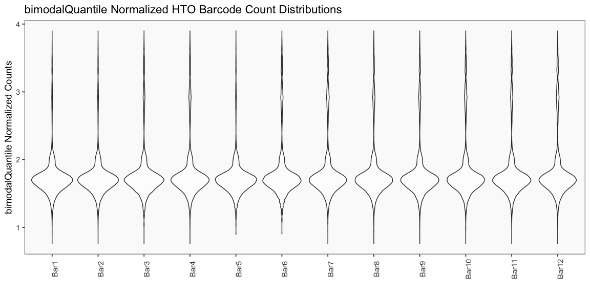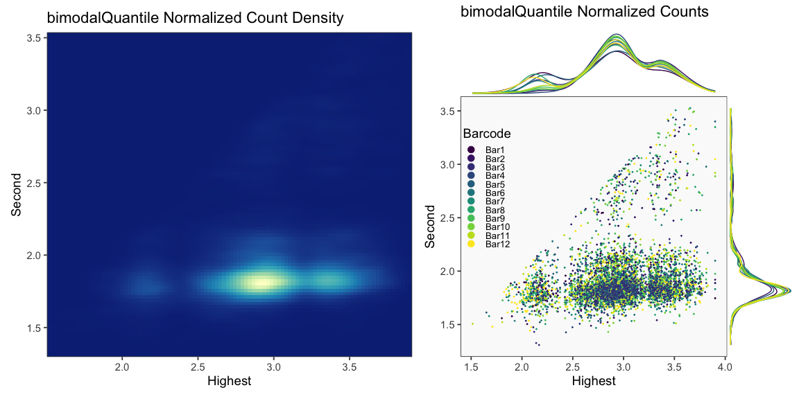
## [1] "Printing log2Center Normalization QC Plots"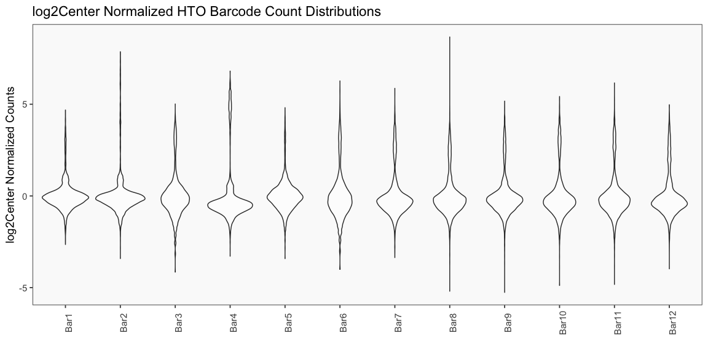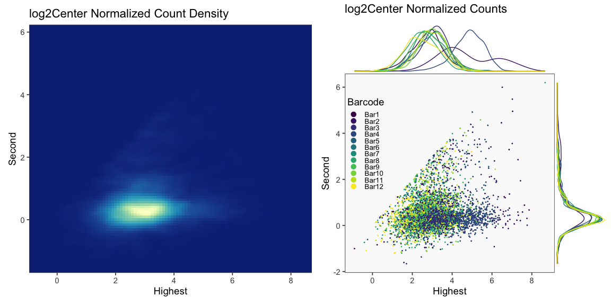
The cellhashR command GenerateCellHashingCalls performs demultiplexing analysis on the data using the algorithms listed in “methods” (BFF_raw and BFF_cluster in the current analysis). Below are results from four calls to GenerateCellHashingCalls, each time using a different parameter set for BFF_cluster.
methods <- c("bff_raw", "bff_cluster")
df <- GenerateCellHashingCalls(barcodeMatrix = barcodeData, methods = methods, cellbarcodeWhitelist = cellbarcodeWhitelist, metricsFile = metricsFile, bff_cluster.doublet_thresh=0.05, bff_cluster.neg_thresh=0.05, bff_cluster.dist_frac=0.1)
write.table(df, file = callFile, sep = '\t', row.names = FALSE, quote = FALSE)## [1] "Starting BFF_raw"
## [1] "rows dropped for low counts: 0 of 12"The lines of output above are printed when BFF_raw is run (as opposed to BFF_cluster).
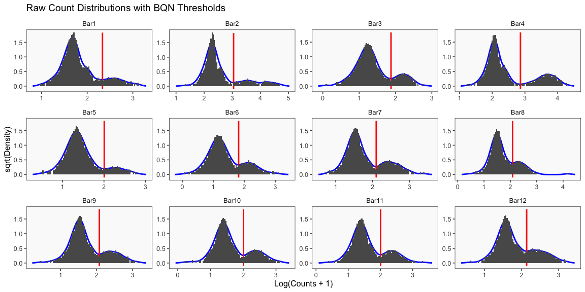
The figure above will be generated each time BFF is run on this data (in either the threshold mode or the cluster mode). Similarly, the list of thresholds below (not in log-space) is given each time BFF is run on the data. Both outputs are shown in this document only this once, for sake of brevity.
BFF_raw classifies droplets based on comparison of raw count values to the thresholds found by fitting. Droplets are classified as singlets when they are positive for just one barcode, as doublets when positive for multiple barcodes, and as negatives when they are negative for all barcodes.
## [1] "Thresholds:"
## [1] "Bar12: 137.252466391685"
## [1] "Bar11: 101.320341426663"
## [1] "Bar10: 102.166166632405"
## [1] "Bar9: 119.819102035079"
## [1] "Bar8: 121.225210166733"
## [1] "Bar7: 125.094886095467"
## [1] "Bar6: 65.6394846865428"
## [1] "Bar5: 101.483503173679"
## [1] "Bar4: 729.16925156116"
## [1] "Bar3: 75.1400201328909"
## [1] "Bar2: 1116.2498732095"
## [1] "Bar1: 216.243218824503"The figure below demonstrates the theory on which BFF_cluster operates. BFF_cluster classification is tunable with three parameters that affect thresholds in the 2D space of top 2 normalized counts. Parameter values are specified for the three parameters bff_cluster.doublet_thresh (shown as beta_c in the figure), bff_cluster.neg_thresh (shown as alpha_c in the figure), and bff_cluster.dist_frac (shown as delta_c in the figure) as demonstrated in the call to GenerateCellHashingCalls above.
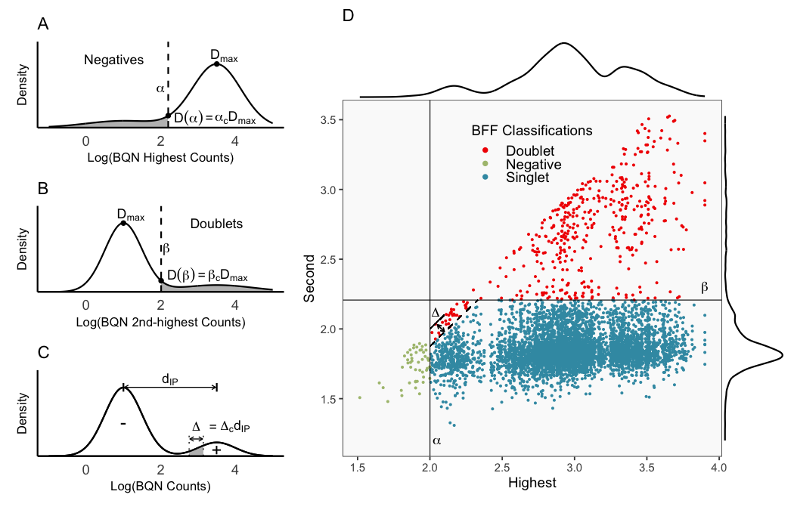
The first set of graphs below demonstrates output for default values for parameters bff_cluster.doublet_thresh, bff_cluster.neg_thresh, and bff_cluster.dist_frac of 0.05, 0.05, and 0.1, respectively.
## [1] "Starting BFF_cluster"
## [1] "rows dropped for low counts: 0 of 12"
## [1] "Doublet thresh: 0.05"
## [1] "Neg thresh: 0.05"
## [1] "Min distance as fraction of distance between peaks: 0.1"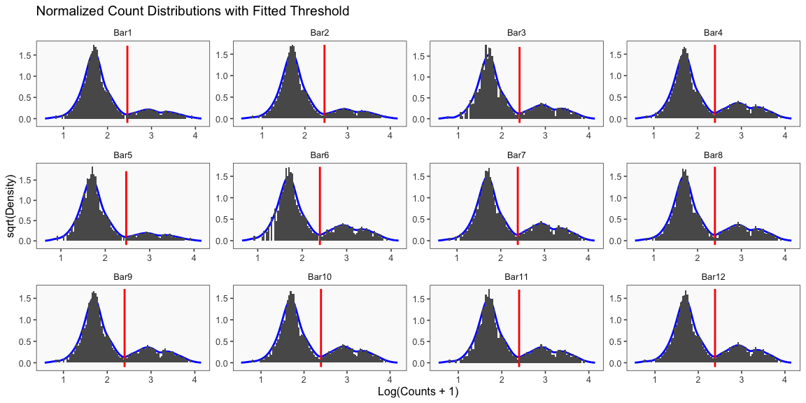
The lines of output above are printed when BFF_cluster is run. The parameter values output here are the default values for BFF_cluster.
The figure above is generated each time BFF_cluster is run (BQN threshold values are not affected by parameter values) but is shown only once here for brevity. In this figure, BQN data and BQN thresholds are shown.
The figure on the left below shows how BFF_cluster droplet classifications cluster in the 2D space of top 2 normalized counts for parameter values for bff_cluster.doublet_thresh, bff_cluster.neg_thresh, and bff_cluster.dist_frac of 0.05, 0.05, and 0.1, respectively. The figure on the right compares the BFF_cluster classifications with BFF_raw classifications (consensus output can be ignored).
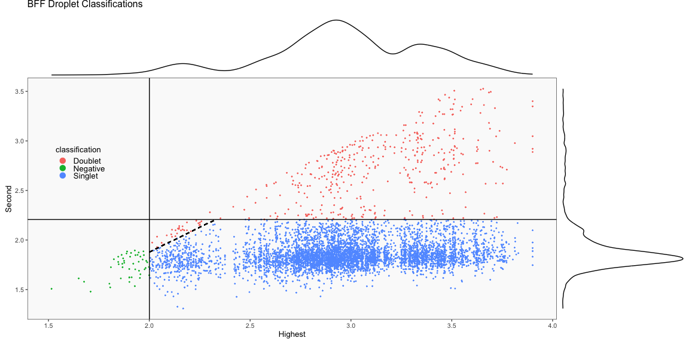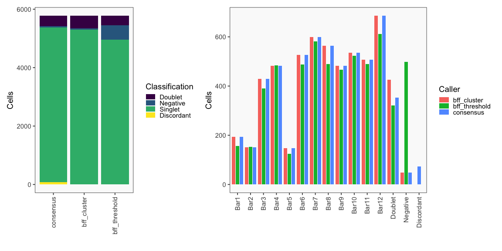
The figure on the left below shows how BFF_cluster droplet classifications cluster in the 2D space of top 2 normalized counts for parameter values for bff_cluster.doublet_thresh, bff_cluster.neg_thresh, and bff_cluster.dist_frac of 0.2, 0.05, and 0.1, respectively. The figure on the right compares the BFF_cluster classifications with BFF_raw classifications (consensus output can be ignored).
df <- GenerateCellHashingCalls(barcodeMatrix = barcodeData, methods = methods, cellbarcodeWhitelist = cellbarcodeWhitelist, metricsFile = metricsFile, bff_cluster.doublet_thresh=0.2, bff_cluster.neg_thresh=0.05, bff_cluster.dist_frac=0.1)
write.table(df, file = callFile, sep = '\t', row.names = FALSE, quote = FALSE)## [1] "Starting BFF_cluster"
## [1] "rows dropped for low counts: 0 of 12"
## [1] "Doublet thresh: 0.2"
## [1] "Neg thresh: 0.05"
## [1] "Min distance as fraction of distance between peaks: 0.1"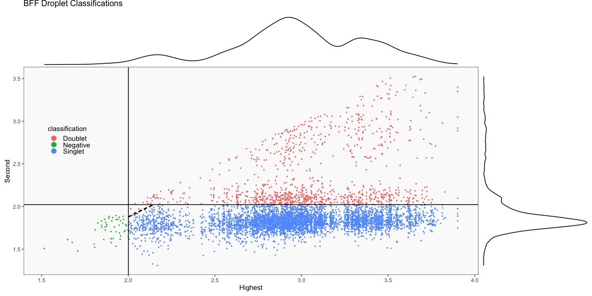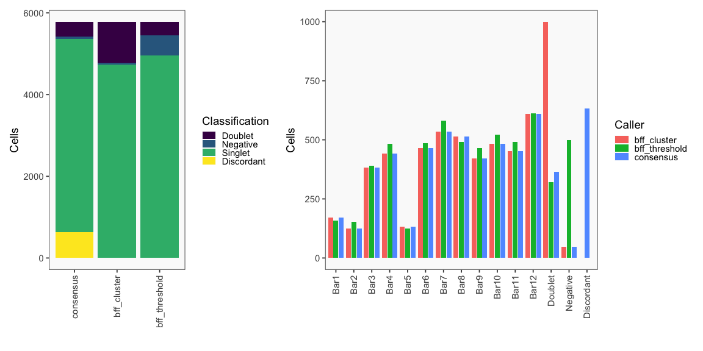
The figure on the left below shows how BFF_cluster droplet classifications cluster in the 2D space of top 2 normalized counts for parameter values for bff_cluster.doublet_thresh, bff_cluster.neg_thresh, and bff_cluster.dist_frac of 0.05, 0.2, and 0.1, respectively. The figure on the right compares the BFF_cluster classifications with BFF_raw classifications (consensus output can be ignored).
df <- GenerateCellHashingCalls(barcodeMatrix = barcodeData, methods = methods, cellbarcodeWhitelist = cellbarcodeWhitelist, metricsFile = metricsFile, bff_cluster.doublet_thresh=0.05, bff_cluster.neg_thresh=0.2, bff_cluster.dist_frac=0.1)
write.table(df, file = callFile, sep = '\t', row.names = FALSE, quote = FALSE)## [1] "Starting BFF_cluster"
## [1] "rows dropped for low counts: 0 of 12"
## [1] "Doublet thresh: 0.05"
## [1] "Neg thresh: 0.2"
## [1] "Min distance as fraction of distance between peaks: 0.1"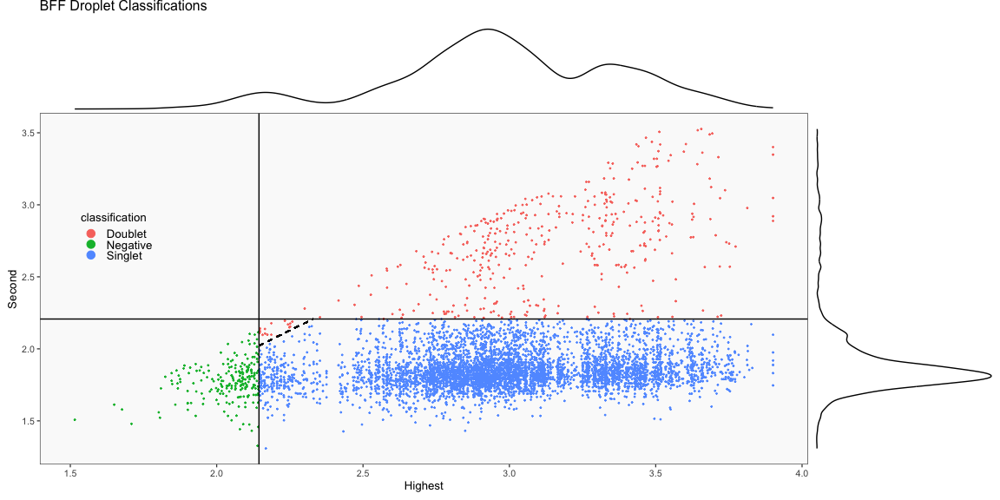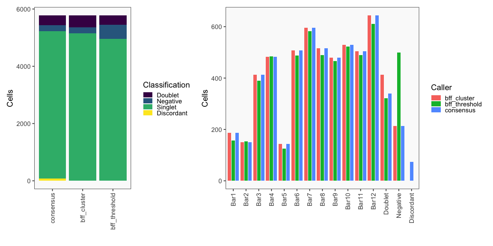
The figure on the left below shows how BFF_cluster droplet classifications cluster in the 2D space of top 2 normalized counts for parameter values for bff_cluster.doublet_thresh, bff_cluster.neg_thresh, and bff_cluster.dist_frac of 0.05, 0.05, and 0.25, respectively. The figure on the right compares the BFF_cluster classifications with BFF_raw classifications (consensus output can be ignored).
df <- GenerateCellHashingCalls(barcodeMatrix = barcodeData, methods = methods, cellbarcodeWhitelist = cellbarcodeWhitelist, metricsFile = metricsFile, bff_cluster.doublet_thresh=0.05, bff_cluster.neg_thresh=0.05, bff_cluster.dist_frac=0.25)
write.table(df, file = callFile, sep = '\t', row.names = FALSE, quote = FALSE)## [1] "Starting BFF_cluster"
## [1] "rows dropped for low counts: 0 of 12"
## [1] "Doublet thresh: 0.05"
## [1] "Neg thresh: 0.05"
## [1] "Min distance as fraction of distance between peaks: 0.25"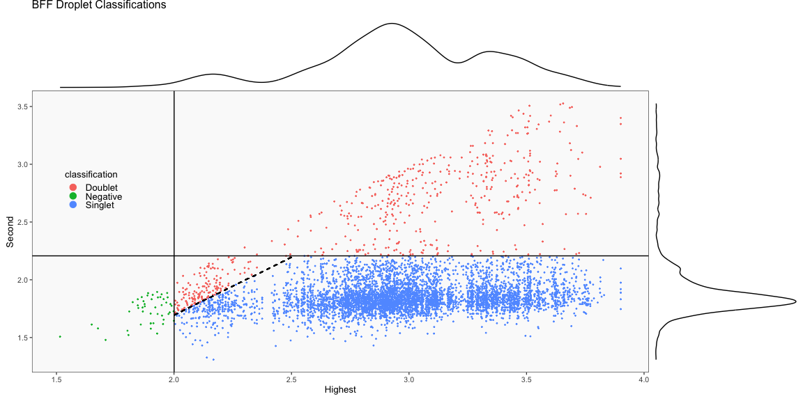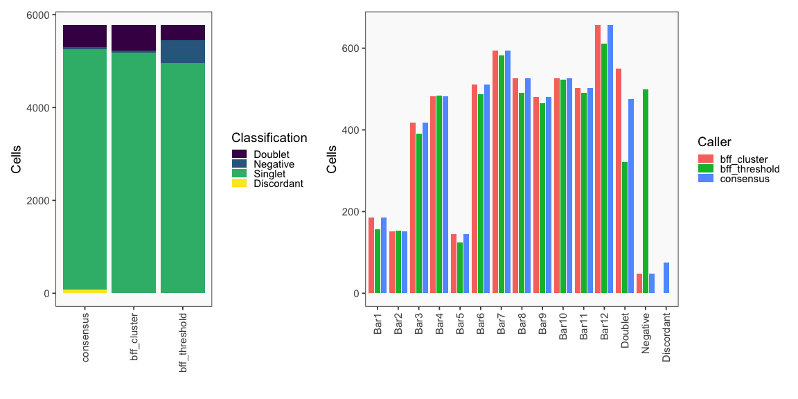